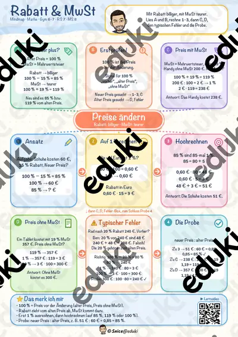
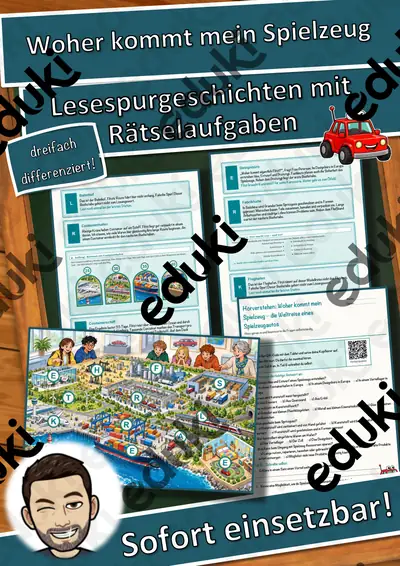

Der Flohmarkt – Lesespurgeschichte mit Rätselaufgaben (Klasse 7)
Mit dieser differenzierten Lesespurgeschichte erarbeiten die Lernenden selbstständig und motivierend, wie ein Preis zustande kommt und wann sich ein Verkaufstag lohnt. Wirtschaftslehrerin Frau Dorn geht mit Yara und Elias Schritt für Schritt über einen Flohmarkt – vom Standplatz über Warenkiste, Sortiertisch, Preisschild, Angebotstafel, Kundenandrang, Verhandlungsecke und Kassenbox bis zum Abrechnungstisch.
So funktioniert die Lesespur: Die Lernenden lesen einen Abschnitt, entnehmen dem Hinweis einen Ort auf dem Marktplatz, suchen ihn auf dem farbigen Marktplatz-Plan (einem Wimmelbild des Flohmarktes) und lesen dort weiter. An jeder richtigen Station sammeln sie einen Buchstaben. Vier Sackgassen (Musikbühne, Hüpfburg, Blumenbeet, Taubenschwarm) dienen der Selbstkontrolle und machen deutlich, dass diese zwar zum Marktplatz gehören, zum Verkaufen aber nichts beitragen. Am Ende ergeben die gesammelten Buchstaben – nach dem Umstellen – ein geheimes Lösungswort rund um das Thema.
Inhaltlich vermittelt das Material zentrale Themen der Wirtschaft in Klasse 7: dass Kosten wie die Standgebühr schon vor dem ersten Verkauf anfallen, dass der Wert einer gebrauchten Ware nicht vom früheren Neupreis abhängt, wie Menge und Interesse den Preis nach oben oder unten bewegen, warum sich das Auszeichnen mit Preisschildern lohnt, dass beim Verhandeln beide Seiten zustimmen müssen und sich Ober- und Untergrenze überschneiden sollten, worin sich Einnahmen und Gewinn unterscheiden und wie eine einfache Abrechnung aus Einnahmen minus Kosten aussieht. Ein lehrplanrelevantes Thema für die Sekundarstufe I aller Schularten (Mittel-, Haupt-, Real-, Ober-, Gesamt- und Gemeinschaftsschule, Gymnasium) – passend zu Preisbildung, Umgang mit Geld, Konsum und Verbraucherbildung.
Das ist enthalten:
- Lesespurgeschichte in drei Niveaus (leicht, mittel, schwer) – ideal zur Differenzierung
- farbiger Marktplatz-Plan mit allen Stationen
- vier eingebettete Aufträge: Begriffe verbinden, Quiz, Rechenaufgabe, Steckbrief
- Hörverstehen mit QR-Code zum Hörtext (Teil A Ankreuzen, Teil B frei schreiben)
- Rätselseite (Wörter-Suchsel und Wissensquiz)
- Ausmalbild
- ausführliches Lösungsblatt mit Fundorten
- das komplette Material zusätzlich als drucksparende Schwarz-Weiß-Vorlage
Geförderte Kompetenzen: sinnentnehmendes und selektives Lesen, Anwenden von Lesestrategien, konzentriertes Zuhören sowie das Verständnis von Preisbildung, Kosten, Einnahmen und Gewinn im Alltag.
Einsatz: Wirtschaftsunterricht, Verbraucherbildung, Projekttage rund um einen Klassenflohmarkt, Wochenplan, Stationenlernen, Vertretungsstunden. Umfang: ca. 26 Seiten.
Ähnliche Materialien

Wimmelbild Lückentext mit Wortspeicher Hörverstehen und Suchsel

Wimmelbild – Hörverstehen mit Lückentext (interaktiv)

Markt und Preis – Angebot und Nachfrage am Christbaummarkt – Lesespurgeschichte mit Rätselaufgaben (Klasse 9)

Markt und Preis: Preisbildung und Marktformen – Arbeitsheft mit Lösungen (WR 8/9, Realschule Bayern)

Rabatt & MwSt Mindmap + 4 Arbeitsblätter mit Lösungen + Lernvideo (QR) – neuer und alter Preis

Wofür lohnt es sich zu leben? – Sinnsuche im Jugendalter – Lesespurgeschichte mit Rätselaufgaben (Klasse 8)

Markt, Preise und Preiselastizität – Angebot, Nachfrage, Gleichgewicht und Elastizität mit Probe-Kurzarbeit (Berufsschule)
